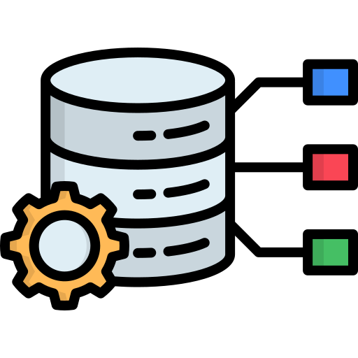
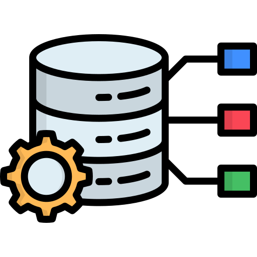

My Skills
Coding & Data Science


Experienced in Python (Pandas, NumPy, Seaborn) and SQL for data analysis, automation, and database management. Skilled at developing machine learning workflows and predictive models.
Data Analytics & Visualization


Proficient in Power BI and Excel for interactive dashboards, KPI analysis, and business reporting. Capable of translating raw data into actionable insights using storytelling and visuals.
Systems, Databases & Tools
 


Hands-on experience with database design, ETL processes, and collaborative tools such as GitHub and Streamlit for building interactive data applications.
Technical Expertise
- Power BI: Advanced DAX, Power Query, KPI dashboards, storytelling.
- Python: Data wrangling, visualization, ML models using Pandas, NumPy, Matplotlib, Seaborn and Scikit-learn.
- SQL: Query optimization, joins, CTEs, stored procedures, indexing, data modeling.
- Databases: Proficient in SQL Server and MySQL for database design, normalization, ERD & schema relationships.
- Excel: PivotTables, advanced formulas, data automation, data visualization, Pivot Charts.
- ERP & Systems: Design and analytics integration (AMMMY ERP).
- Version Control: GitHub for collaboration.